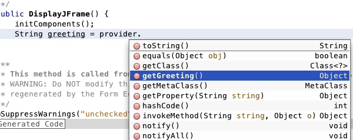

Apache NetBeans (incubating)
Apache NetBeans (incubating)Just released!
Este documento lhe apresenta o Groovy no NetBeans IDE. Você criará uma aplicação Java, adicionará um JFrame e recuperará uma mensagem simples de um arquivo Groovy.

Figure 1. O conteúdo desta página se aplica ao NetBeans IDE 7.2, 7.3, 7.4 e 8.0
Para seguir este tutorial, são necessários os recursos e o software a seguir.
| Software ou Recurso | Versão Necessária |
|---|---|
Pacote Java 7.2, 7.3, 7.4, 8.0 |
|
versão 7 ou 8 |
|
Plug-in do Groovy |
- |
Ativar o Plug-in do Groovy
O suporte para Groovy é desativado por padrão quando você instala a versão Java do IDE. Para trabalhar com o Groovy no IDE, ative primeiramente o plug-in do Groovy no gerenciador de Plug-ins.
-
Escolha Ferramentas > Plug-ins no menu principal para abrir o gerenciador de Plug-ins.
-
Clique na guia Instalado no gerenciador de Plug-ins.
-
Selecione Mostrar Detalhes e localize o plug-in Groovy e Grails na lista de plug-ins.
Se preferir, digite groovy no campo Pesquisar para filtrar a lista de plug-ins.
-
Marque a caixa de seleção do plug-in Groovy e Grails e clique em Ativar. image::images/groovy-plugin.png[title="Plug-in do Groovy selecionado no gerenciador de Plug-ins"]
-
Clique em Ativar na janela do Instalador do NetBeans IDE para ativar o plug-in do Groovy.
-
Clique em Finalizar na janela do Instalador do NetBeans IDE após a instalação ser concluída e, em seguida, clique em Fechar no gerenciador de Plug-ins.
Criando a Aplicação
Nesta seção, você criará uma nova aplicação Java.
-
Selecione Arquivo > Novo Projeto (Ctrl-Shift-N; ⌘-Shift-N no Mac) no menu principal para abrir o assistente Novo Projeto.
-
Selecione Aplicação Java na categoria Java. Clique em Próximo.
-
Digite GroovyJavaDemo como o Nome do Projeto e especifique a pasta na qual você deseja criar a aplicação no campo Localização do Projeto.
-
Cancele a seleção da caixa de seleção Criar Classe Principal. Clique em Finalizar.
Quando você clica em Finalizar, o IDE cria o projeto e exibe um nó do projeto na janela Projetos.
Criando a Classe Java e o Arquivo Groovy
Nesta seção, você criará um JFrame e uma classe Groovy.
-
Clique com o botão direito do mouse no nó do projeto na janela Projetos e escolha Novo > Outro para abrir a caixa de diálogo Novo Arquivo.
-
Selecione o Form JFrame na categoria Forms de GUI Swing. Clique em Próximo. image::images/groovy-newjframe.png[title="Modelo de Form JFrame no assistente Novo Arquivo"]
-
Digite DisplayJFrame como o Nome da Classe.
-
Digite org.demo como o Pacote. Clique em Finalizar. image::images/groovy-newjframe2.png[title="Painel Nome e Localização no assistente Novo Form JFrame"]
Quando você clica em Finalizar, o IDE cria o form JFrame e abre o arquivo no editor.
-
Clique com o botão direito do mouse no nó do projeto na janela Projetos e escolha Novo > Outro para abrir a caixa de diálogo Novo Arquivo.
-
Selecione a Classe Groovy na categoria Groovy. Clique em Próximo. image::images/groovy-newgroovyclass.png[title="Modelo de Classe Groovy no assistente Novo Arquivo"]
-
Digite GreetingProvider como o Nome da Classe.
-
Selecione o pacote
org.demona lista drop-down Pacote. Clique em Finalizar.
Quando você clica em Finalizar, o IDE cria o arquivo Groovy e abre-o no editor.
Se você expandir o nó do projeto na janela Projetos poderá ver que os dois arquivos criados estão no nó Pacotes de Origem.
Chamando o Groovy a partir do Java
Nesta seção, você codificará a interação entre o arquivo Groovy e a classe Java.
-
Abra
GreetingProvider.groovyno editor (se ainda não estiver aberto). -
Defina uma variável greeting na definição de classe adicionando o seguinte código (em negrito). Salve as alterações.
class GreetingProvider {
*def greeting = "Hello from Groovy"*
}-
Abra
DisplayJFrame.javano editor (se ainda não estiver aberto) e clique na guia Design. -
Abra a Paleta (Janela > Paleta do menu principal) e arraste e solte um elemento Campo de Texto (
jTextField) da Paleta e para o JFrame. image::images/groovy-jtextfield.png[title="JTextfield no DesignJFrame será aberto na view de Design do editor"] -
Clique na guia Código-fonte do editor e adicione o seguinte código à parte superior do corpo da classe para instanciar a classe Groovy e no construtor para chamar o método
getGreeting()na classe Groovy.
public class DisplayJFrameForm extends javax.swing.JFrame {*
GreetingProvider provider = new GreetingProvider();*
public DisplayJFrame() {
initComponents();
*String greeting = provider.getGreeting().toString();
jTextField1.setText(greeting);*
}É possível utilizar a funcionalidade autocompletar código na classe Java para encontrar os métodos necessários na classe Groovy.

Figure 2. Autocompletar código no editor
-
Clique com o botão direito do mouse no nó na janela Projetos e selecione Executar.
Quando escolher Executar o IDE compila e aciona a aplicação.

Figure 3. Janela da aplicação exibindo o texto da classe Groovy no campo de texto
Na janela da aplicação, você pode ver que o texto da classe Groovy é exibido no campo de texto.
Agora você sabe como criar uma aplicação Java básica que interaja com o Groovy.
Consulte Também
O NetBeans IDE também suporta o framework do Grails na Web, que usa a linguagem Groovy no desenvolvimento Java Web. Para aprender a usar o framework do Grails com o NetBeans IDE, consulte Introdução ao Framework do Grails.